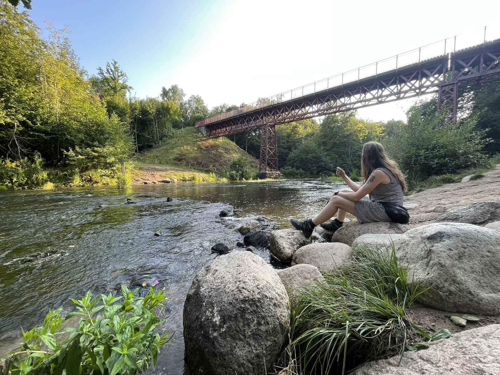
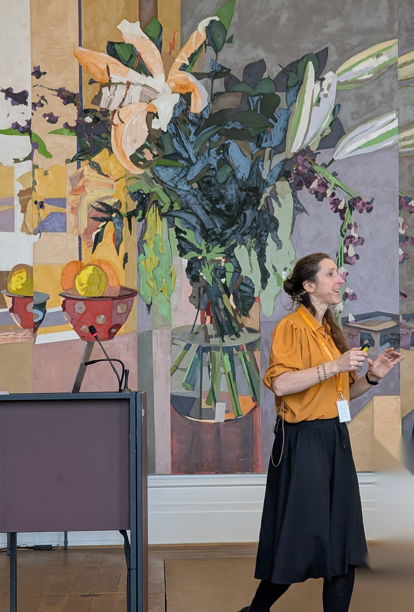

Rådgivning & sparring
Til ledere, fagpersoner og organisationer.
Når mennesket møder intelligent teknologi
Rådgivning, foredrag og workshops om kunstig intelligens for ledere og organisationer - med mennesket i centrum.
Mennesket med er et perspektiv på forholdet mellem mennesker og teknologi med parti for mennesket.
Samtalen om kunstig intelligens handler alt for ofte om maskinen - om modeller, funktioner og potentiale. Imens glemmer vi at spørge, hvad den gør ved os og vores arbejde, vores relationer og vores måde at tænke på.
Teknologien skal bruges med mennesker og aldrig i stedet for mennesker - som en forlængelse af det, vi er.
Mennesket med er en præventiv dannelsesøvelse i brugen af kunstig intelligens - en kritisk og aktiv stillingtagen, der flytter os fra tankeløs brug af det kunstige til intelligent brug af det mulige.
Den største udfordring er at sikre, at mennesket forbliver aktivt tænkende, lærende og ansvarligt i mødet med nye teknologier. Derfor bør vi stille os selv spørgsmålene:
Teknologien gør os mere effektive, men hvad er tiden værd, hvis vi ikke lægger en strategi for, hvad tiden skal bruges til?
Det er et spørgsmål, som vil fylde mere i den kommende tid. Effektivitet er ikke et mål i sig selv, og den frigivne tid skal kanaliseres videre til nye områder, som kan skabe vækst og mening.
Tid til at blive klogere. På vores fag, på hinanden, på den teknologi vi arbejder med.
Tid til samtalen. Til kollegaen, borgeren, kunden. Til alt det mellem mennesker, som ingen teknologi kan og bør overtage.
Tid til at komme dig over en hverdag, hvor forhastelse er blevet normen, og et hul i kalenderen føles som angstprovokerende spildtid.
Tid til at give en hånd med, lægge en skulder til - og tid til ørenlyd og hjerterum.
Tid til at fordybe sig i stedet for kun lige at nå det vigtigste.
Tid til at gøre tingene ordentligt. Læse en ekstra gang, tænke en ekstra tanke, og aflevere noget, man er stolt af.
Tid til at prøve noget af. De bedste idéer opstår sjældent i en fyldt kalender. De opstår, når der er luft.
Tid til at stoppe op og spørge, om vi er på vej det rigtige sted hen - hvilken rolle ønsker vi teknologien skal spille?

Til ledere, fagpersoner og organisationer.
Skaber forståelse, perspektiv og refleksion.
Omsætter perspektiver til praksis.
Gør teknologi til en del af hverdagen.

På tværs af organisationer går de samme mønstre igen, når mennesker møder ny teknologi.
»Bliver jeg overflødig?« Spørgsmålet fylder i de fleste rum og bekymringen forsvinder ikke af sig selv. Den bliver dog mindre, når der er plads til at spørge.
At kunstig intelligens enten altid har ret, eller at den slet ikke kan bruges til noget - hvor sandheden som oftest ligger et sted midt imellem.
Licenserne er købt, før mennesket er med. Man har købt ind på teknologien før samtalen om, hvorfor og hvordan den kan anvendes. Det er oftest her, skuffelser og bekymring opstår.
Forandring lykkes positivt, når den tager afsæt i hverdagens opgaver - i det konkrete og ikke det flyvske. Der, hvor der er plads til at øve sig og spørge, når man er i tvivl.
Mit navn er Maja Lene Fries Harsberg.
Jeg hjælper mennesker og organisationer med at forstå, anvende og tage stilling til teknologi og kunstig intelligens.
Jeg har en baggrund som cand.mag. i kultur, kommunikation og globalisering og har mere end 15 års erfaring med Microsoft-teknologi, projektledelse og organisatorisk forandring.
Mit arbejde begynder altid med mennesket.
Jeg er altid klar til en kop kaffe - fysisk eller virtuelt.